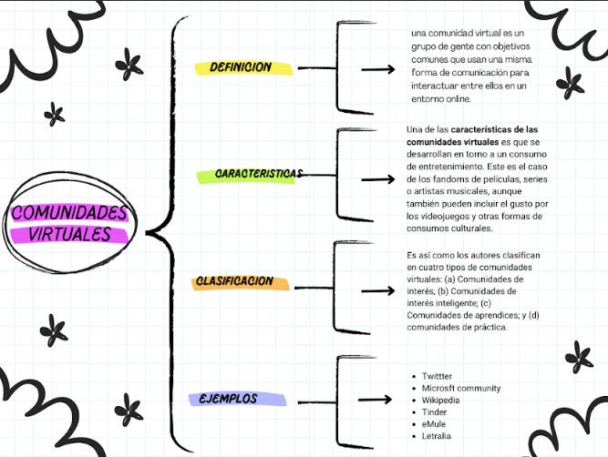
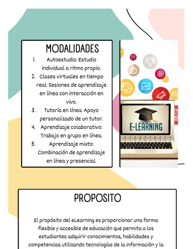
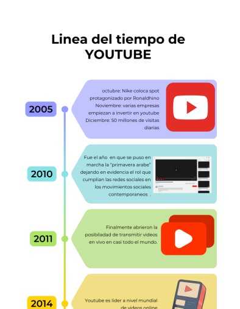
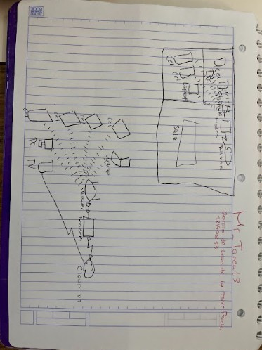
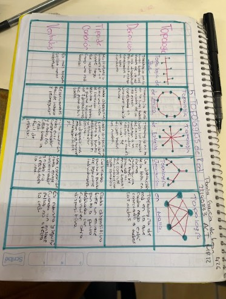
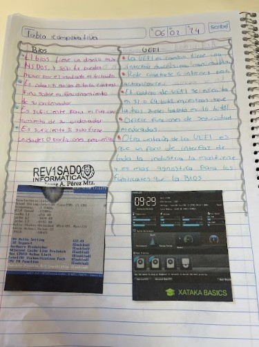
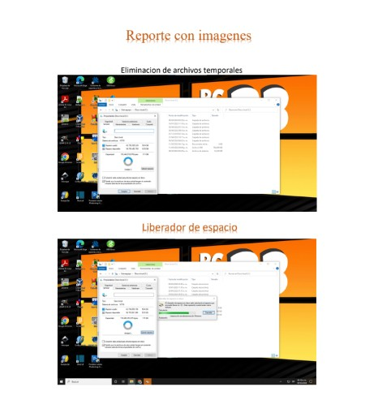

| Submódulo 1 | Submódulo 2 |
|---|---|
COMUNIDADES VIRTUALESUsa diferentes tipos de redes y comunidades virtuales, examinando los tipos de redes y sus características para el intercambio responsable de información y archivos multimedia en sus diferentes ámbitos. Emplea plataformas con actividades educativas innovadoras, identificando archivos multimedia así como comunidades virtuales, del ámbito escolar o profesional para favorecer su formación continua.



|
MANTENIMIENTO Y REDES DE COMPUTOPlantea el uso de diagramas de flujo y algoritmos, analizando los elementos que los conforman, fomentando su desarrollo creativo, con la finalidad de solucionar problemas dentro de su contexto de manera lógica. Explica de forma asertiva los lenguajes de programación, enunciando sus elementos y su m etodología, para favorecer el diseño de programas utilizables en su contexto.




|